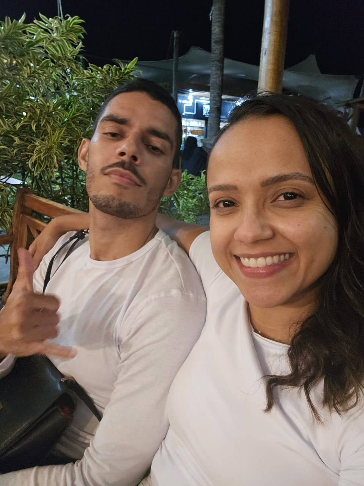
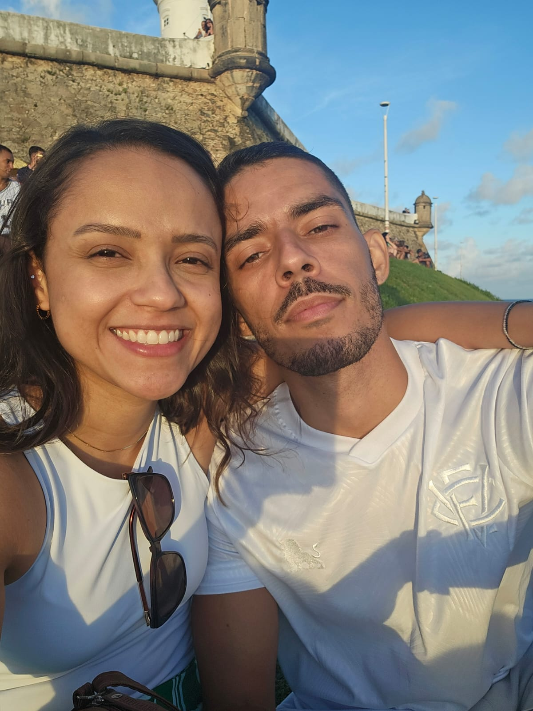
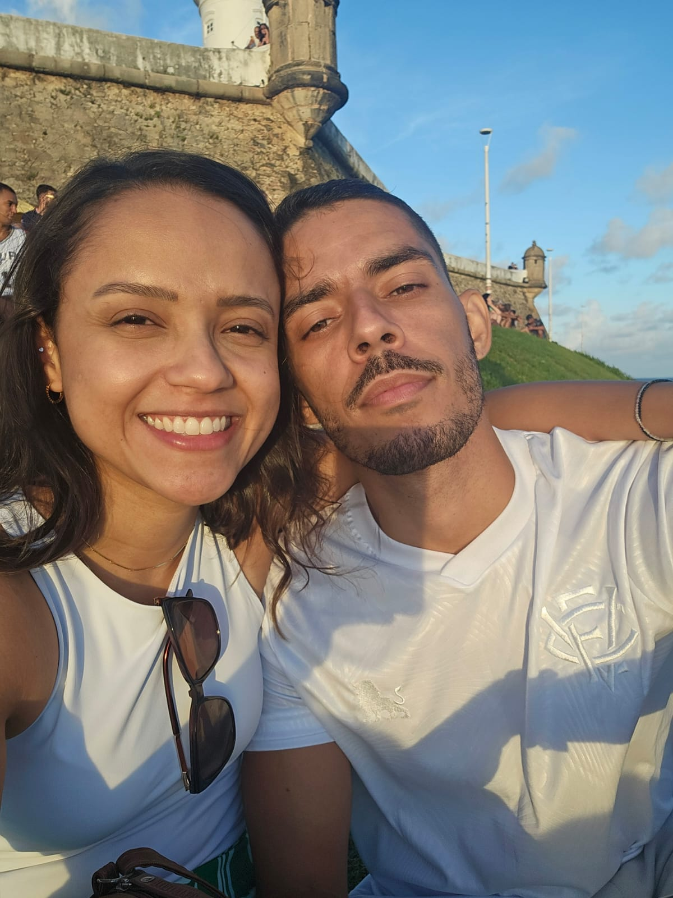

O tempo da nossa história:
enchendo seu saco, de pegações no carro por salvador e aguentando suas mini-bravezas


E se a carta for digital, é brega?

Feliz dia dos namorados, meu dengo
A data é comercial, tudo bem, mas por ser a nossa primeira, tem a sua devida importância.
Importante como o primeiro passeio, pra caminhar;
Importante como a primeira saída, pra jantar;
Importante como a primeira conversa, sobre se relacionar;
Importante como o "não para aqui, meu porteiro é fofoqueiro". Você queria era me beijar, sua danadinha;
Importante como, FINALMENTE, o primeiro beijo. E que beijo;
+18: Importante como a primeira transa — uma contravenção, diga-se de passagem, dois erradinhos;
Passar o primeiro — de futuros muitos — dia dos namorados contigo me traz todas as lembranças do quanto eu imaginei e idealizei como seria estar com você.
O quanto esperei, o quanto quis. No primeiro momento pensei que depois de todo esse tempo buscando, estar com você era uma conquista.
Mas percebo que na verdade você é um presente. Não no sentido de objeto físico, mas no sentido imaterial. Um presente pra minha alma, um presente pro meu ser, um presente pro meu futuro. (E modéstia a parte, o pai é um presentaço viu? Outro igual não tem, completo demais, pode procurar)
Então só me cabe agradecer a Deus por trazer você até mim, equalizar nossas energias — minha luz — e me ancorar no seu cais — meu porto. Mas como essa conversa é entre eu e ele, com licença.
Dito isso, pra você tambem fica minha gratidão. Por entrar em minha vida me fazendo imensuravelmente feliz, completo e com sede de viver para sempre estar com você. Por me fazer descobrir o que é amar, e me tornar a pessoa que está disposta a entregar o mundo inteiro só pra ganhar um sorriso teu, e que sorriso.
Por ser uma pessoa incrível e, que se fosse para ser breve e resumir em poucas palavras se tornaria, indescritível. Por ter finalmente baixado a guarda - (teimosa) - e parar de ficar, parafraseando Thiaguinho: "adiando a vontade de Deus". Me permitindo mostrar quem eu sou, o quanto eu te admiro, te respeito, te valorizo e principalmente o quanto eu sempre te quis — e te quero.
Pra você, meu xuxu, eu estou disposto a mover o mundo, seja nele um grão de areia ou qualquer montanha. Para sempre estar com você, voltar pra você, e fazer o que estamos vivendo ser alem do perfeito. E, por fim, estar na sua vida sendo o seu PILOTO:
"Caprichoso, cuidadoso e amoroso
Um bom moço, atencioso
Corajoso, companheiro e verdadeiro
Um escudeiro, sem receio
Se precisar, perigoso
Faço o almoço, sirvo a mesa
Beija o teu corpo todo, trago cerveja (Cerveja não, AGUA)
Depois te beijo de novo, lavo a louça
Apago e ascendo o seu fogo
Jogando o TEU jogo[...]
A minha missão, minha tenente, é te fazer FELIZ.
Te amo minha gatinha, minha vida, minha deusa, minha musa, meu ar, meu chão, minha vida, meu tudo
Obs: Muito.

 
